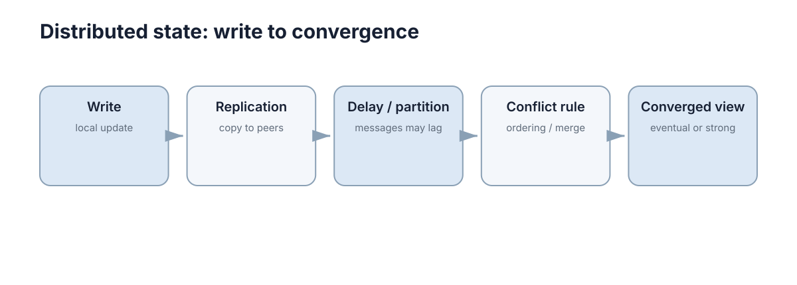

Consistency & Distributed State
只要同一份逻辑状态存在多个副本，就会出现一个问题：什么时候这些副本可以被认为“足够一致”？ 不同数据对一致性的要求不同，不能用一个协议解决所有状态。

一个常见的误区是把一致性当成一个可以整体提升的系统属性：“我们要不要上强一致？”真正可操作的问法要具体得多：这类数据允许多旧、允许多少并发写、冲突能不能自动合并、冲突的后果由谁承担？ 回答完这几个问题，方案往往只剩一两个。
还要先区分两个不同层面的东西。副本状态描述的是“各节点上实际存了什么”，可见语义描述的是“客户端在什么条件下能看到什么”。系统实际交付给上层的是后者，而前者只是实现手段。大量关于一致性的争论，其实是在用实现层的词汇讨论体验层的需求。
旧读与写冲突
副本传播需要时间，因此节点 B 暂时没看到 A 的最新写入，这是stale read。如果 A 和 B 同时修改同一对象，之后必须决定哪次写入有效或怎样合并，这才是write conflict。
两者都表现为“状态不同”，但处理机制并不相同。
三者的界限可以这样划分：只读不写时出现的差异叫旧读，可以用读己之写或单调读这类会话保证缓解；只写不读时出现的差异叫写冲突，需要合并规则或冲突检测；读写混合且存在因果关系时，则涉及顺序保证。误把旧读当冲突去处理，会引出不必要的锁；误把冲突当旧读，会让一次写入被静默丢弃。
| 现象 | 触发条件 | 表面症状 | 对应机制 |
|---|---|---|---|
| Stale read | 读发生在传播完成前 | 读到旧值 | 会话保证、读修复 |
| Write conflict | 两个副本并发写同一对象 | 最终值不确定 | 版本检测、CRDT、共识 |
| Lost update | 读改写未做版本检查 | 一次写入凭空消失 | compare-and-swap |
| Causal violation | 因果相关事件被重排 | 看到结果却看不到原因 | 因果一致、逻辑时钟 |
| Permanent divergence | 没有任何合并路径 | 副本永久不同 | 手动干预、反熵同步 |
其中lost update 是最危险的一种，因为它在日志里几乎不留痕迹：两个节点都合法地完成了一次写操作，系统不会报错，只是最终状态少了一次更新。检测它的唯一办法是把版本信息带进写路径。
还可以按“谁先发现”来区分这些现象，这决定了机制应该放在哪里：
- 写路径发现：条件写失败、版本不匹配，可以立即反馈给调用方。
- 读路径发现：读到比已知版本更旧的值，可以选择等待或换副本重读。
- 后台发现：反熵或修复任务在同步时才发现分叉，此时已难以追溯原因。
- 人工发现：只有用户报告不一致时才暴露，代价最高。
越早发现，修复选项越多。 好的设计会把尽可能多的不一致提前到写路径，用版本条件把它变成一次可重试的失败。
强一致和最终一致描述的是可见语义
强一致类模型希望读操作看到满足明确全局顺序的状态；最终一致允许副本短暂不同，只要停止新写入后最终能够收敛。
机器人急停状态、任务唯一归属通常不能容忍随意冲突；遥测历史、统计指标往往可以晚一点同步。一致性应该按数据语义选择。
“强一致”不是一个单一模型，而是一族性质：线性一致（linearizability）要求每个操作看起来在某个全局时刻原子生效，并尊重真实时间顺序；顺序一致（sequential consistency）只要求存在一个所有节点都同意的顺序；因果一致（causal consistency）只保序因果相关的事件。要求越强，可用性与延迟代价越高。
“最终一致”同样不等于“随便什么时候一致”。它承诺的是在停止写入且通信恢复后，副本会收敛，但收敛时间没有上界，收敛路径也可能是任意顺序的应用。这一点在工程上很关键：如果收敛过程是“后写覆盖先写”，那么副本最终会一致，但一致到的值可能是被覆盖掉的旧值——收敛不等于正确。
| 模型 | 保证 | 典型代价 | 适用数据 |
|---|---|---|---|
| 线性一致 | 单对象上的原子读写，尊重真实时间 | 需要共识，延迟高 | 任务归属、锁、唯一 ID |
| 顺序一致 | 存在全局顺序，但不绑定真实时间 | 中等 | 顺序敏感的共享序列 |
| 因果一致 | 保序因果，允许并发重排 | 较低，需逻辑时钟 | 评论、协同编辑、日志 |
| 最终一致 | 停写后收敛 | 最低 | 遥测、统计、缓存 |
选择模型时要避免两个极端：把所有数据都做成线性一致，会让每个写操作都要等待多数派确认，延迟成倍上升；把所有数据都做成最终一致，则会在一处关键的“唯一性”上留下无法修复的漏洞。实践中的分界线通常是“是否存在必须唯一的声明”——若有，就至少要用条件写或共识；若没有，就可以放宽。
判断某类数据是否需要更强模型，可以依次回答：
- 读到旧值会不会导致不可逆的物理动作？
- 两个并发写同时生效会不会产生矛盾状态？
- 冲突能否用纯函数合并而不丢失用户意图？
- 不一致持续多久是可接受的，后果由谁承担？
版本号可以把静默覆盖变成显式冲突
若两个节点都读取 version=7，之后分别写回，接口可以要求“只有当前版本仍为 7 才允许更新”。第一个成功后版本变为 8，第二个就能发现自己基于旧数据操作。
def update_if_version(record, expected, new_owner):
if record["version"] != expected:
return False
record["owner"] = new_owner
record["version"] += 1
return True
这类 compare-and-swap 思想并没有消灭并发，而是让并发冲突变得可检测。
这段代码的价值不在那三行判断，而在于它改变了接口的语义契约：写入从“把值设成 X”变成“如果状态仍是我读到的那个，才把它设成 X”。前者在并发下必然丢失更新，后者把丢失更新转换成一次显式的失败，让调用方能重读、重试或上报冲突。
单版本号有一个重要局限：它只能检测冲突，无法判断冲突是否可以自动合并。两个节点并发地给同一列表追加元素，用版本号检测的结果是“冲突”，而实际上这两次追加可以简单地合并。要区分“真冲突”与“可合并的并发”，需要比单版本号更多的结构信息，这正是版本向量与 CRDT 的出发点。
实现上还要小心两点：一是版本必须随写入原子更新，读后写之间存在窗口，因此接口必须提供 CAS 语义而不是“先读再写”；二是单版本号只能比较相等，不能比较大小，因此它适合“检测是否被人抢先”，不适合判断“谁更新”。需要后者时，应当改用可排序的版本或序列号。
最简单的冲突处理方式往往是避免多人同时写
若业务允许，可以规定某类状态只有一个权威 writer，其他节点只订阅。这比设计复杂合并规则更容易验证。
只有在确实需要多点写入时，才需要版本、锁、事务、共识或可合并数据结构等更复杂机制。
单写者模型的力学很清楚：冲突之所以存在，是因为两个写入者都对同一对象有权限。若把权限收窄到一个权威节点，其余节点只读，那么问题从“如何合并”退化成“如何保证订阅不丢”，而后者可以用序列号和全量重同步解决。
代价是可用性：权威节点不可用时，该类状态无法更新。因此在采用单写者之前，要先回答“权威节点失效时，这段时间的状态更新能不能被推迟或由人工处理”。可以推迟的（如任务优先级调整、参数变更）适合单写者；不能推迟的（如急停）恰恰不能依赖中心节点，而必须做成每个节点本地可决策的。
| 共识方案 | 冲突的处理方式 | 代价 | 何时值得 |
|---|---|---|---|
| 单写者 | 结构性消除 | 写入可用性依赖该节点 | 更新可被推迟 |
| 中心锁服务 | 串行化访问 | 锁服务成为单点与延迟瓶颈 | 临界区明确且短 |
| 共识（如 Raft） | 多数派定序 | 延迟 × 2、需多数派存活 | 要求强一致的元数据 |
| CRDT | 数学上可合并 | 数据结构受限、元数据膨胀 | 高并发、可交换更新 |
| 手动解决 | 上报给人 | 需要 UI 与流程 | 低频、后果严重的冲突 |
决定是否采用单写者，可以用几个问题快速筛选：
- 这类状态的更新能否延迟几分钟？不能延迟的，不应依赖中心节点。
- 最终决策权是天然确定的，还是需要协商？天然确定的适合单写者。
- 权威节点失效时，业务能否接受该类状态暂时冻结？
- 写入频率是否低到单节点不会成为吞吐瓶颈？
CAP 讨论的是网络分区期间的取舍
当网络已经分区，系统无法同时保证所有请求都立即得到成功响应，并且所有节点仍保持强一致语义。它不是“任何分布式系统永远只能在 C/A/P 里选两个”的简单口号。
工程上更有用的问题是：分区发生时，这类数据宁愿拒绝部分请求，还是允许短暂不一致？
这个取舍有一个形式化的版本。在异步网络中，若允许消息任意延迟，则“始终返回且保持线性一致”与“分区两侧都可继续服务”不能兼得——这是 CAP 的严格含义。它只在分区发生期间成立；网络正常时三者可以同时满足，所以“平时选两个”的说法是误读。
更贴近日常设计的框架是 PACELC：分区时（P）在可用性与一致性之间选；否则（E，else）在延迟与一致性之间选。第二半段常被忽略，却决定了绝大多数时刻的系统体验——即使没有分区，跨区域强一致写入也要付出跨洲往返延迟。
| 数据类别 | 分区时选择 | 具体行为 | 理由 |
|---|---|---|---|
| 任务唯一归属 | 一致性优先 | 拒绝无法确认归属的分配 | 重复分配造成物理冲突 |
| 急停与安全状态 | 本地可用性优先 | 各节点本地立即决策 | 安全动作不能等待网络 |
| 遥测与统计 | 可用性优先 | 各节点继续写入，事后合并 | 短暂分叉后果可接受 |
| 配置与参数 | 一致性优先 | 读取上一份已确认配置 | 参数不同步后果严重 |
分区本身也有程度之别：完全断开、单向可达、以及高延迟导致的超时，三者对系统的影响并不相同。单向可达尤其危险，因为它会让两侧都认为自己是正常的一侧，从而各自尝试推进决策，最终产生两个互不知情的“权威”。任何“主观分区”都在提醒我们：系统的故障判断是概率性的，而不是确定性的。
一致性需求应按数据分类
任务归属通常要求较强的一致性，遥测展示却可以容忍短暂旧值。把所有数据都放进同一种一致性模型会付出不必要的延迟或复杂度。设计时应逐类说明允许多旧、是否允许冲突，以及冲突造成的后果。
一个可落地的做法是给每类数据填一张“一致性档案”，把模糊的需求逼成可验证的条目：
| 数据类别 | 可容忍陈旧度 | 允许并发写 | 冲突后果 | 选定模型 |
|---|---|---|---|---|
| 任务归属 | 0（必须即时唯一） | 否 | 两机争抢同一目标 | 线性一致 / 中心分配 |
| 地图增量 | 秒级 | 是（不同区域） | 局部图层重叠 | 因果一致 + 空间分区 |
| 位姿状态流 | 100 ms | 否（单写者） | 定位跳变 | 单写者 + 序列号 |
| 遥测与日志 | 分钟级 | 是 | 计数偏差、重复行 | 最终一致 + 去重 |
| 配置参数 | 小时级 | 否 | 行为不一致 | 单写者 + 版本号 |
填表过程本身就是设计评审：凡是说不清“允许多旧”的条目，最后都会变成难以排查的线上问题。
除了表里的内容，评审时还应追问三个问题：
- 这份数据的权威来源是谁？是否存在多个写入方而无人察觉？
- 冲突发生时的默认动作是什么——拒绝、合并，还是选一个并告警？
- 这类状态被错误使用时会触发什么？仅仅是显示错误，还是会导致物理动作？
会话保证
全局强一致代价高昂，但很多用户体验问题其实是同一客户端视角下的不一致：我刚写完却读不到自己写的值，或者刷新一次数据反而变旧。这类问题可以用只作用于单个会话的保证来解决，成本远低于全局强一致。
这正是 session guarantee 的定位：它不约束所有副本，只约束“同一个客户端与系统之间的交互序列”，从而在保持最终一致的前提下消除最刺眼的不一致体验。
| 会话保证 | 承诺 | 反例（被禁止的行为） | 常见实现 |
|---|---|---|---|
| 读己之写 | 客户端能看到自己此前的写入 | 发帖后刷新看不到自己的帖 | 路由到主副本 / 记录写版本号并等待 |
| 单调读 | 后续读不会回退到更旧的值 | 刷新两次，第二次看到更旧数据 | 记录已读版本，拒绝更低版本副本 |
| 单调写 | 同一客户端的写按发出顺序生效 | 改名和改头像顺序颠倒 | 客户端序号 + 服务端保序 |
| 写后读（write-follows-reads） | 写入基于的读版本被尊重 | 基于旧值写回，覆盖他人更新 | 携带读版本 + CAS |
其中单调读在移动端与多机器人系统里格外实用：客户端记录自己见过的最高版本，读到更低版本的副本时选择等待或换副本，而不是把退化的视图直接呈现。它不需要任何全局协调，只需要客户端多带一个整数。
这四个保证之间有包含关系：读己之写通常需要配合单调读才完整（否则你可能读到自己写的值，之后再读到比它更旧的）。它们是可以叠加的组合，而不是互相替代的选项。
实现上，会话保证通常只需要服务端或客户端保留少量状态，成本很低：
- 客户端记录已读版本或已写版本，读到的副本落后时选择等待或换副本。
- 服务端在会话内粘性路由到同一副本，避免视图来回切换。
- 写路径携带前置版本，由服务端做条件检查，实现写后读语义。
一个常见误区是把会话保证当成“便宜版的强一致”。两者的目标完全不同：强一致约束所有观察者的可见顺序，会话保证只约束单个观察者在其自身会话内的单调性。前者保证“大家一起看到同一个真相”，后者只保证“你自己不会看到时间倒流”。在只需要后者时，用前者是昂贵的误配。
版本向量与冲突检测
版本向量为每个参与者维护一个计数器分量，从而同时回答“有没有因果在先”和“是不是并发”。设对象 \(X\) 的版本向量为 \(V_X\)，其长度为参与者数量，第 \(k\) 个分量记录该对象包含来自第 \(k\) 个参与者的多少次更新。
比较规则很简洁。记 \(V_a \le V_b\) 当且仅当所有分量都不大于：
由此得到三种判定：
- 若 \(V_a \le V_b\) 且 \(V_a \ne V_b\)，则 \(V_a\) 因果先于 \(V_b\)，说明 \(V_b\) 已经包含了 \(V_a\) 的全部更新；
- 若 \(V_b \le V_a\) 且 \(V_b \ne V_a\)，则 \(V_b\) 在先，情况与上者对称；
- 若既存在 \(V_a[j] > V_b[j]\) 又存在 \(V_a[k] < V_b[k]\)，即
则两个版本并发，构成真正的冲突，需要合并或上报。
举一个三节点的例子。设参与者为 A、B、C，向量分量顺序为 \((A, B, C)\)，初始对象版本为 \((0,0,0)\)。
| 步骤 | 发生在 | 操作 | 执行后的版本向量 | 判定 |
|---|---|---|---|---|
| 1 | A | A 更新对象 | \((1,0,0)\) | 基线 |
| 2 | A | 同步给 B | B 得到 \((1,0,0)\) | \((1,0,0)\) 因果先于后两者 |
| 3 | B | B 基于该版本更新 | \((1,1,0)\) | 因果包含步骤 1 |
| 4 | C | A 的更新到达前，C 直接更新 | \((0,0,1)\) | 与 \((1,1,0)\) 无因果 |
| 5 | A | 收到 B 的 \((1,1,0)\) | \((1,1,0)\) | 合并成功，无冲突 |
| 6 | A | 收到 C 的 \((0,0,1)\) | 需要比较 | \((1,1,0)\) 与 \((0,0,1)\) 并发 |
第 6 步的比较结果既非小于也非大于，因此 A 必须判断：这两次更新修改的是不同字段（可以自动合并）还是同一字段（构成冲突）。版本向量只负责告诉我们“能不能自动判断”，不负责替我们决定合并语义。
落地方式通常是“保存多个候选版本”而不是“立刻合并”：收到并发版本时，把两者都保留在候选集合里，等生成新版本时再压缩。这样既不会丢失信息，也不会在缺少合并语义时擅自做决定。版本向量的正确用法是“标记冲突”，而不是“解决冲突”。
版本向量的代价同样明确：分量数随参与者数量增长，节点频繁加入退出时需要裁剪或分段，裁剪不当会让“因果在先”被误判为“并发”，从而引入假冲突。因此它适合参与者集合稳定、规模有限、且确实需要精确冲突判定的场景——同团队的几台机器人正是典型例子。
CRDT 与自动收敛
比“检测冲突再解决”更进一步的想法是：让冲突在数据结构层面不可能需要解决。这就是 CRDT（Conflict-free Replicated Data Type，无冲突复制数据类型）的出发点是设计可交换、可结合、幂等的合并操作。
它依赖的是数学上的半格结构：每个副本的状态都是所有已见更新在合并操作 \(\sqcup\) 下的结果，而 \(\sqcup\) 满足交换律、结合律与幂等律。三条性质合起来意味着副本本地以任意顺序、任意次数应用相同的一组更新，最终都会收敛到同一个值——也就是
幂等性尤其重要：它让“至少一次”的网络重传不再需要去重表，重复应用合并不改变结果。这正是 CRDT 在不可靠链路上好用的原因。
CRDT 分为两大类。状态型（state-based / CvRDT） 直接同步整份状态，接收方用 \(\sqcup\) 合并；实现简单、天然容错，但需要状态可压缩或增量传输。操作型（operation-based / CmRDT） 只传播操作，要求操作在传递中满足因果顺序，网络负担小但对传输层要求更高。
一个最小例子是基于计数的合并：只要每个副本保留“按来源分开计数”，逐分量取最大值就满足三条性质。
def merge(a, b):
keys = set(a) | set(b)
return {k: max(a.get(k, 0), b.get(k, 0)) for k in keys}
常见 CRDT 包括：G-Counter 与 PN-Counter（计数）、G-Set / 2P-Set / OR-Set（集合，OR-Set 支持添加与删除且不误删并发添加项）、LWW-Register（按时间戳或逻辑序取后写）、以及 RGA / LSEQ 这类序列结构（协同编辑文本）。每种都对应一组具体的可合并语义。
| 类型 | 合并方式 | 关键要求 | 优点 | 代价与限制 |
|---|---|---|---|---|
| 状态型 CvRDT | 全状态 \(\sqcup\) | 合并需幂等、可交换 | 容忍乱序与重复，实现直接 | 状态可能膨胀，需要压缩/增量 |
| 操作型 CmRDT | 重放操作 | 需因果有序送达 | 传输量小 | 依赖可靠且保序的传播 |
| G-Counter | 逐分量取最大 | 只增不减 | 极简、幂等 | 不能减，元数据随副本数增长 |
| OR-Set | 加标签后集合并/减 | 标签唯一 | 增删并发不丢项 | 元数据膨胀，需垃圾回收 |
| LWW-Register | 取更“新”的写 | 需要可比较的全序 | 语义直观 | 并发写会被静默丢弃一个 |
选择 CRDT 的判断标准很实际：先问“这类数据的并发更新是否本质上可以自动合并”。若可以（计数、集合并、坐标取最新），CRDT 能省掉大量协调；若不可以（唯一任务归属、库存扣减、状态机转换），CRDT 无法替代共识，强行套用只会把冲突推到更晚、更难排查的位置。
在动手前，至少要先确认三件事，否则很容易引入难以察觉的错误：
- 合并函数是否真的满足交换律、结合律、幂等律？需要证明或测试，而不是凭直觉。
- 元数据增长是否有回收机制？长期运行的集合类 CRDT 必须配 GC 策略。
- “最后一次写入获胜”这类语义所丢弃的并发更新，业务能否接受？
最后需要注意 CRDT 的两个隐藏成本。其一是元数据开销：为了让合并不丢信息，结构里要保存足够的因果信息，长期运行的集合类 CRDT 必须配合 GC 策略，而 GC 又需要知道哪些更新已经全网络可见。其二是语义与直觉的偏差：LWW 语义下“最后一次写入获胜”看起来自然，但它丢弃的并发写必须由业务容忍，否则需要换成显式的冲突上报。
下一步：理解了副本与冲突之后，故障分类与恢复路径见 容错与故障处理；消息契约与交付语义见 网络与消息传递；时间与因果的底层工具见 时间与异步；多机之间的协调与分配问题见 分配与分布式决策。